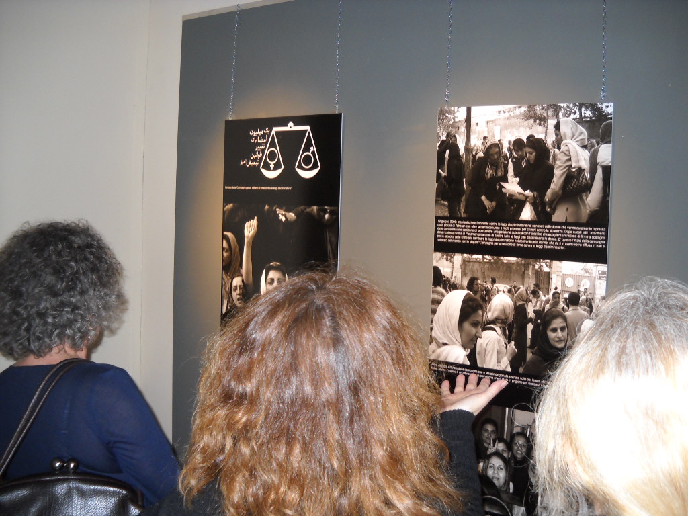
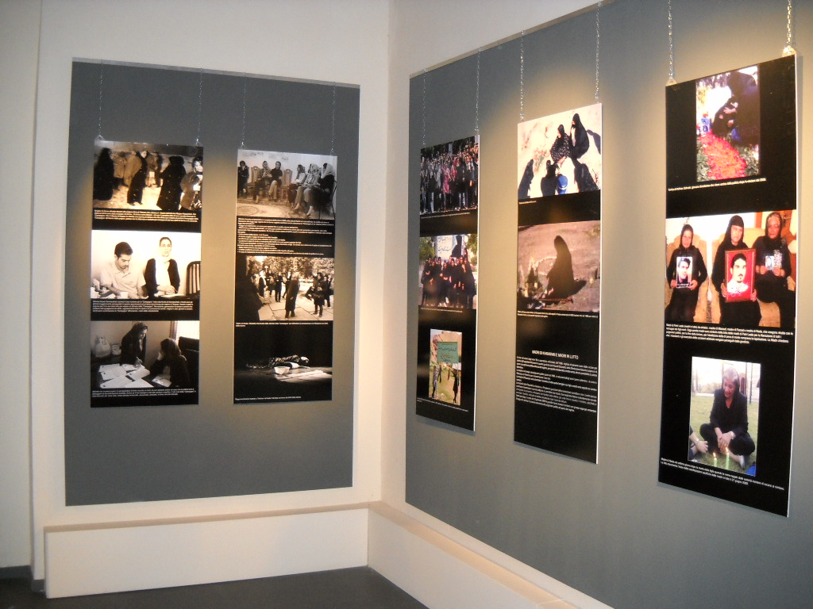
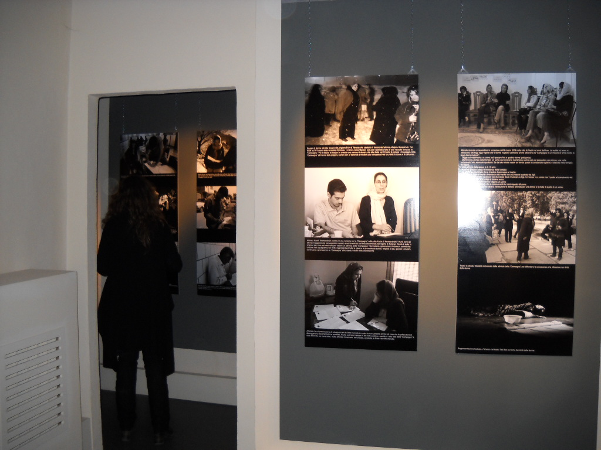
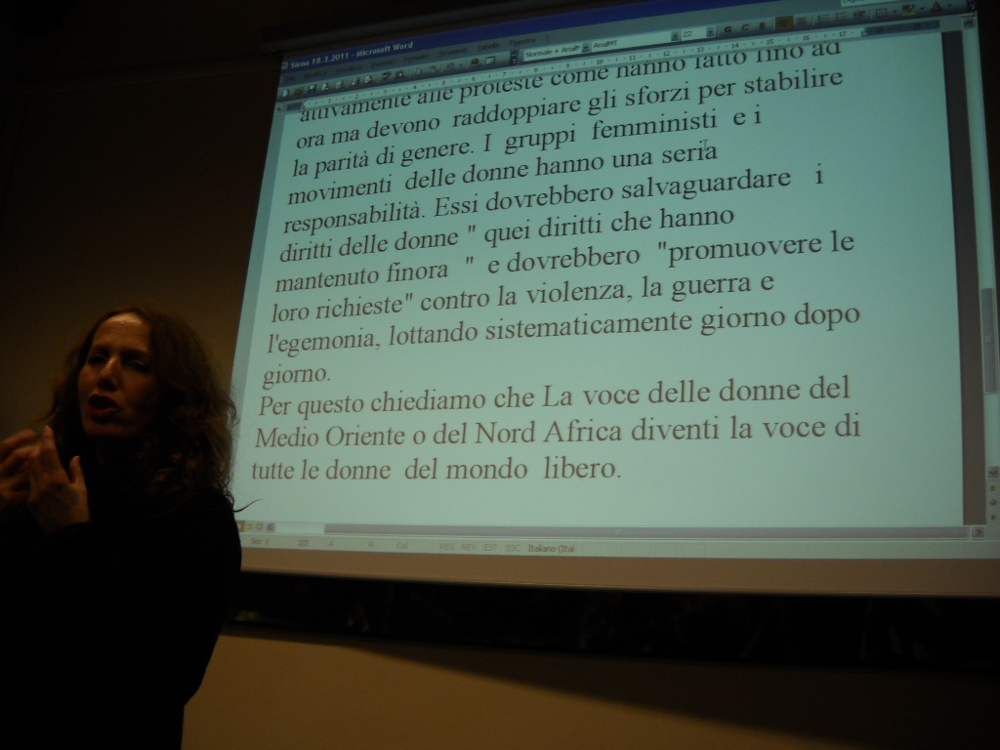
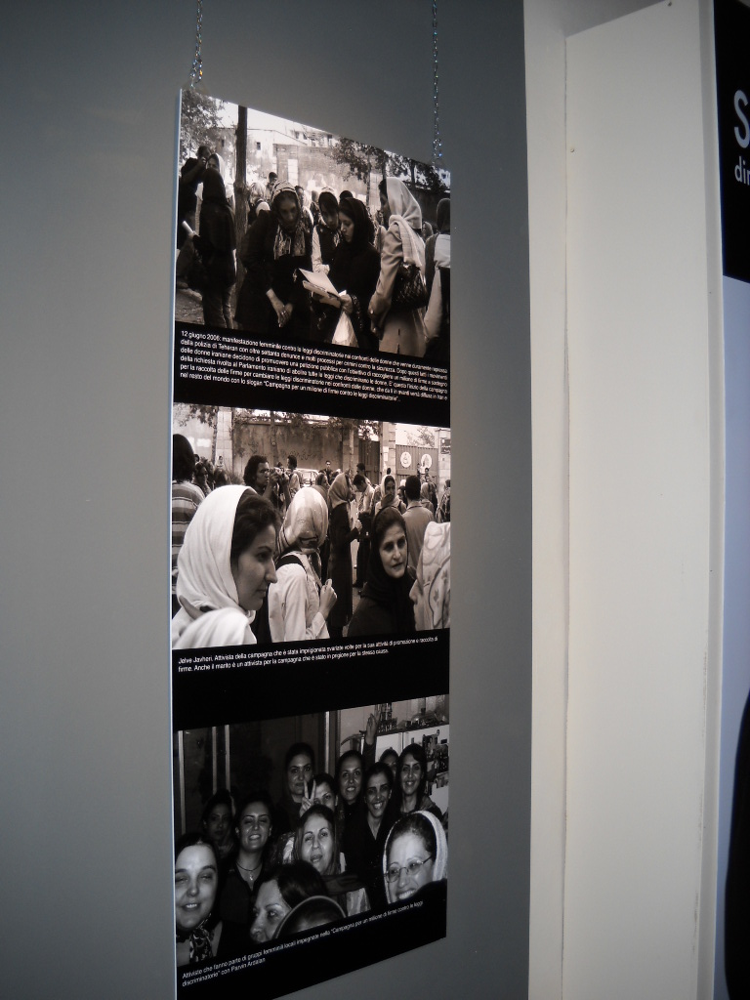

|
|
افتتاح نمایشگاه عکسهای کمپین یک میلیون امضا و مادران پارک لاله در اطاق های خاطره انستیتوی تاریخ مقاومت شهر سی ینا
دو شنبه15 فروردین 1390
تغییر برای برابری: امسال بمناسبت ۸ مارس روز زن ،در شهر سی ینا برنامه های مختلف برای زنان از اول مارس تا ۸ آوریل با نام "در این دنیای کر اینقدر ادامه می دهیم تا شنیده شویم" تدارک دیده شده است.

افتتاح نمایشگاهی در حمایت از زنان مقاوم ایران با نام واقعیت مرا دریاب . حقوق زنان و بنیاد گرایی ها با عکس های گویایی از زنان ایران در اطاقهای خاطره انستیتو تاریخ مقاومت شهر سی ینا جایی که یک روز مقر فاشیست ها و محل شکنجه مردم بدست فاشیستها بوده و امروز محل نمایشگاه دایمی فاشیسم سی ینا می باشد، هم یکی از این برنامه هاست، حمایت از زنانی که هر روز بطریق فیزیکی و یا روحی بخاطر قوانین شدیدا تبعیض آمیز تحت ستم هستند و بخاطر درخواست تغییر قوانین نابرابر حتی جان خود را به خطر می اندازند . موضوع عکس ها فعالیتهای کمپین یک میلیون امضا برای تغییر قوانین تبغیض آمیز و مادران عزادار(مادران پارک لاله ) است.


در روز نخست نمایشگاه کنفرانسی با نام حمایت از حقوق زنان در سیستمهای توتالیته با سخنرانی سیمونتا پلگرینی مسؤول کمیسون فرصتهای برابر استان سی ینا بر گزار شد.
ایشان با صحبت از قیام های این روزهای کشورهای شمال افریقا و خاور میانه نگرانی خود را از وضعیت زنان این منطقه ابراز داشت وحمایت خود را از مبارزات صلح آمیز زنان ایران و زنان منطقه برای برابری و دموکراسی اعلام نمود و افزود که اینگونه برنامه ها در حمایت از زنان همچنان در شهر سی ینا ادامه خواهد داشت لیلا کرمی فارغ التحصیل دکترای تاریخ اسلام دانشگاه ساپینزا رم، از تاریخچه مقاومت و مبارزه زنان ایران از واقعه تنباکو تا کمپین یک میلیون امضا سخن گفت ، دبورا پیچی نماینده CISDA ایتالیا که از زنان افغان حمایت می کنند فجایع زندگی روزمره زنان افغان را باز گو کرد

صبری نجفی از فعالان کمپین یک میلیون امضا و از حامیان مادران عزادار ضمن تشکر از حمایت برگزارکنندگان از مبارزات مسالمت آمیز زنان ایران تقاضاو تاکید نمود که حمایت از زنان تحت ستم دیگر کشورهای شمال افریقا و خاورمیانه که تلاششان دو برابر مردان است را فراموش نکنند زیرا که این زنان نه تنها بدنبال دموکراسی و آزادی برای کشورشان هستند بلکه در پی آنند که ناگهان آن آزادی های بدست آورده را از دست ندهند و همچنین بدنبال رسیدن به برابری و رسیدن به دیگر حقوق بدست نیاورده شان هستند که آن جز با همکاری و همیاری همه زنان آزاده دنیا میسر نمیشود.

این نمایشگاه عکس تا اخر اکتبر ۲۰۱۱ادامه خواهد داشت و بعد از ان در برنامه های دیگر با همکاری فعالان کمپین در شهرهای مختلف ایتالیا برای معرفی بیشتر کمپین و مادران پارک لاله به نمایش گذاشته خواهد شد.